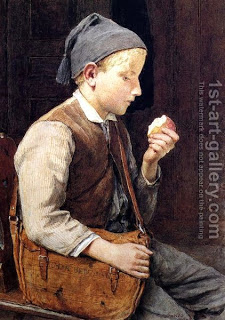

Bava Kamma 97 - Seizing the Slave and Making Him Work
In the household of Rav Yosef Bar Chama, they would seize the slaves of people who owed them money and have the slaves do work for them. His son Rava inquired about the legal basis for this. The justifications were:
It costs more to feed the slave than his work is worth, and the master uses it only as a convenience, and Rav Yosef was feeding the slave, thus performing a favor;
The master is glad that the slave works in the off-time, because he is not habituated to laziness. Rava said, "True, but when people owe you money, it looks like usury," and his father agreed.